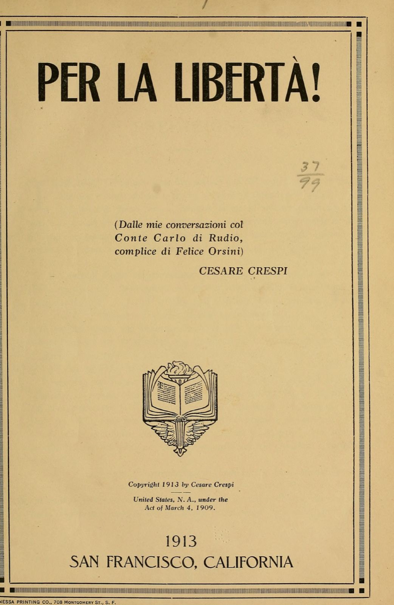
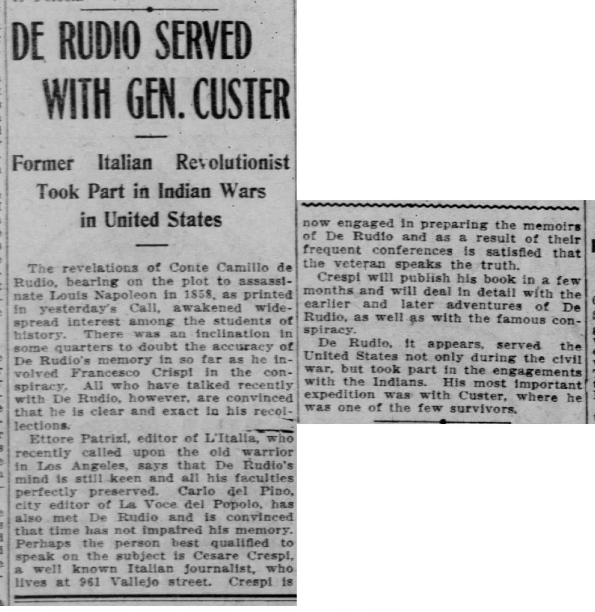
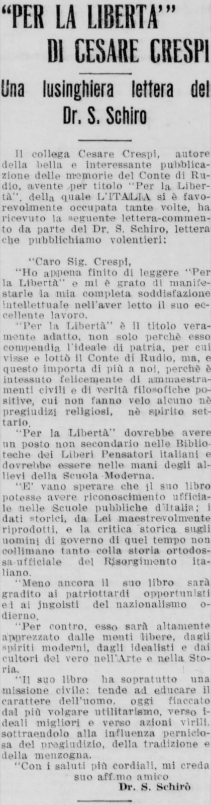
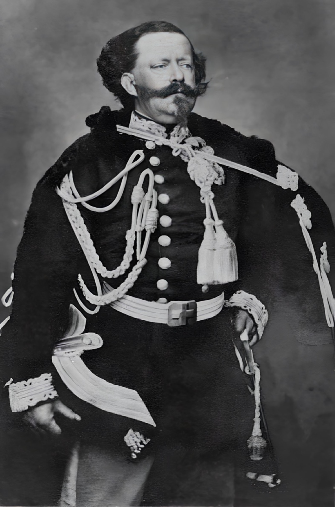
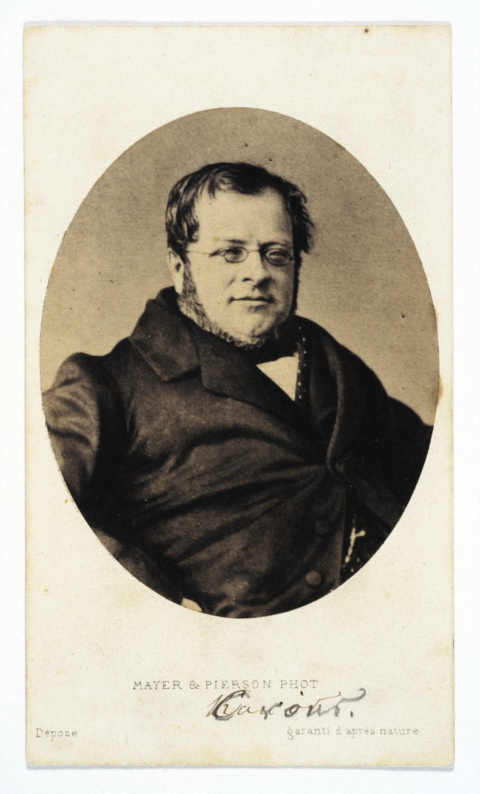
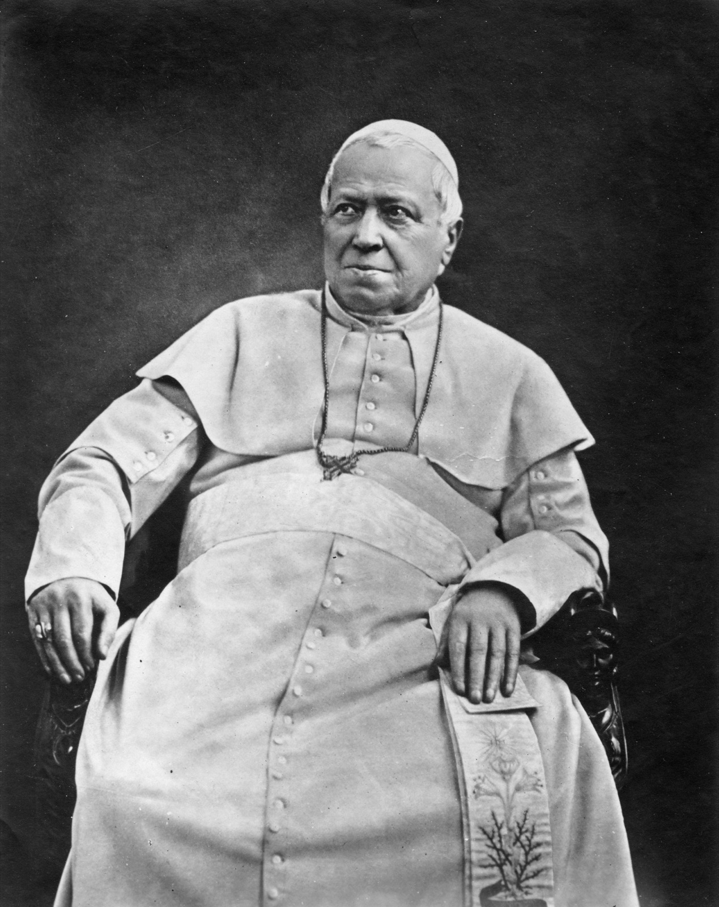

Themes
Five short essays on the ideas that organize Per la libertà! — the convictions that turn a string of episodes into a single argument. The book is not a chronicle that happens to have opinions; it is a polemic that happens to take the form of a life. These essays read it on its own terms first, then step back.
The same three voices used elsewhere in this companion apply (see the index):
- Body prose reads the book as it understands itself — di Rudio's partisan, Mazzinian, anticlerical, anti-Savoy account — anchored to the chapters where the ideas surface.
- > Historical note — external, independently verifiable context, checked before it is stated.
- > Scholarship — what the standard academic literature contributes; full details are in the Event Context bibliography unless given here.
Citations use the companion's form — e.g. P2 Ch. 33 (pp. 264–268) — with pages keyed to the source scan via data/chapter_pages.json.
1. Testimony as method — the "human document"
The book announces its own method in its first sentence, and the method is a refusal. "The present volume might make some contribution to History; but it is not history in the sense in which that word is today understood and written." Crespi disclaims "the methodical concatenation of facts and the cold judgment upon men and events" and offers instead something he calls a "human document" — a record not of what objectively happened but of "the soul of the times," reached by "rummaging among the passions that stirred them." (Preface, pp. 7–8)

The first edition's title page — Per la libertà! (Dalle mie conversazioni col Conte Carlo di Rudio, complice di Felice Orsini), Cesare Crespi, San Francisco, 1913. From the Library of Congress copy (in-repo source scan); public domain.
This is a deliberate choice of genre, and everything follows from it. Because the value sought is the witness's inner truth rather than the historian's verified one, fidelity means fidelity to the witness. Crespi says he could have "softened certain jarring notes" and "erased certain heterogeneous imprints" — the borrowed cadences of the authors di Rudio loved — and chose not to: "To adulterate the word issued from lips silenced for ever... for a simple mortal it is cowardice." (Preface, pp. 7–8) The partisanship the reader meets on every page is therefore not a flaw the book failed to correct; it is the thing the book exists to preserve.
The guarantee of authenticity is physical, almost legal. Crespi did not merely take notes: "not only did I procure the approval, in writing, of every single chapter, but I also requested and obtained that every page liable to presumable controversy should be authenticated by di Rudio with his own signature." (Preface, pp. 7–8) The memoir is built like a deposition — a chain of countersigned testimony — precisely because its maker foresaw that it would be challenged, and that its subject would not be alive to defend it: "I sensed that this book would see the light when di Rudio would be no more."
The opening chapter then dramatizes the method before the history begins. Crespi arrives at the little wooden house in Los Angeles as "a reporter wizened in the trade," and the whole encounter is staged as an act of reading a man from his surroundings: the freethinking library, "works stamped with the spirit of freedom of thought," and on the walls the two presiding portraits — Giuseppe Mazzini and the martyr Fortunato Calvi — prompting the line that is the method in miniature: "The house reveals the man!" (P1 Ch. 1, pp. 9–14) The title's full claim — Dalle mie conversazioni col conte Carlo di Rudio, "from my conversations with" — is the warrant for everything after: this is oral testimony, transcribed and vouched for, not research.
Historical note — Crespi's foresight was exact. The book appeared in 1913; di Rudio — "Charles DeRudio" — had died at Pasadena, California, on 1 November 1910. The memoir is, by design, posthumous testimony. One seam of the later life it otherwise omits shows through in the very first chapter, where di Rudio's daughter speaks of West Point and of her father's service in the U.S. 7th Cavalry — the American afterlife the narrative proper never reaches, since it closes in 1864. That afterlife is set out in the Timeline. (Source: Wikipedia, "Charles DeRudio.")
Genesis and reception. Both the making of the book and its hostile relation to official history are documented in the San Francisco Italian-American press. Five years before publication, the San Francisco Call reported (30 September 1908, under the headline "De Rudio Served with Gen. Custer") that Cesare Crespi — "a well known Italian journalist, who lives at 961 Vallejo street" — was "now engaged in preparing the memoirs of De Rudio and as a result of their frequent conferences is satisfied that the veteran speaks the truth." The notice has di Rudio's credibility vouched for by the editors Ettore Patrizi (L'Italia) and Carlo del Pino (La Voce del Popolo) after "some quarters" had doubted his memory — specifically his implicating Francesco Crispi in the 1858 plot, the claim the companion notes at Event Context §8 — and reports that di Rudio "took part in the engagements with the Indians… his most important expedition was with Custer, where he was one of the few survivors": the American afterlife the memoir itself never reaches (see the Timeline). It confirms in passing what this companion reconstructs of Crespi — the Vallejo Street address, the free-thought milieu, and the conference-and-countersign method that makes the book a "human document."

"De Rudio Served with Gen. Custer," San Francisco Call, 30 September 1908, p. 10 — the memoir in preparation, five years before publication. Public domain.
When the finished book appeared in 1913, the colony's daily L'Italia, which by its own account had "favorably concerned itself" with the memoir "many times," printed an open letter from a Dr. S. Schirò who read Per la libertà! exactly as it asks to be read:
"Per la Libertà is a truly fitting title, not only because it sums up the ideal of country for which Count di Rudio lived and fought, but — and this matters more to us — because it is happily interwoven with civic lessons and positive philosophical truths, veiled by no religious prejudice nor sectarian spirit. … The historical data you have masterfully reproduced, and the historical critique of the men of government of that time, do not square with the orthodox, official history of the Italian Risorgimento. Still less will your book please the opportunist patrioteers and the jingoists of today's nationalism. … Your book has, above all, a civic mission: to educate the character of man — today enfeebled by the most vulgar utilitarianism — toward better ideals and manly action, drawing him from the pernicious influence of prejudice, tradition, and falsehood."
Schirò would set the book "in the libraries of Italian Free Thinkers" and "in the hands of the pupils of the Modern School" — the anticlerical, rationalist current (Francisco Ferrer's Escuela Moderna) in which Crespi himself moved. The letter is a small piece of evidence for this companion's reading: a reader in 1913 already received the book as a partisan, anticlerical counter-history, deliberately out of step with the official Risorgimento — not as neutral chronicle. (Source: "'Per la Libertà' di Cesare Crespi — Una lusinghiera lettera del Dr. S. Schirò," L'Italia (San Francisco), 17 June 1913, p. 4; the full Italian is reproduced in the clipping. Public domain.)

Dr. S. Schirò's open letter on "Per la libertà!", from L'Italia (San Francisco), 17 June 1913, p. 4. Public domain (1913).
2. Republic against monarchy
The book's deepest quarrel is not with Austria or with France but with the kind of Italy that won. di Rudio is a Mazzinian republican, and to him unification under the House of Savoy was not a triumph imperfectly achieved but a cause achieved by the wrong hands and for the wrong reasons. The argument is stated most fully in Chapter 31, his bitter retrospect on unification watched from London.

Vittorio Emanuele II, first King of Italy — carte-de-visite by André-Adolphe-Eugène Disdéri, c. 1861. Wikimedia Commons; public domain. To di Rudio, "a simple vassal of the Empire."
The indictment is itemized. The 1859 alliance of Piedmont with Napoleon III produces "the treacherous peace of Villafranca," which abandons the Veneto to Austria; the price of French help is Nice and Savoy — "the full price paid for a service only partially rendered" — so that "while the Revolution sacrificed the blood of heroes to add new Provinces... the Savoyard Monarchy worked in reverse and severed from it two of its ancient Provinces." Cavour, who had "deplored as the supreme affliction of Italy the arts of the revolutionaries," turns "from devil to friar" by adopting those very arts when they serve the dynasty. Vittorio Emanuele is reduced to "a simple vassal of the Empire." (P2 Ch. 31, pp. 253–258)

Camillo Benso, Count of Cavour — the monarchy's "practical" statesman, who in di Rudio's account turned "from devil to friar" — photograph, c. 1860. Wikimedia Commons; public domain.
Underneath the grievances is a clean moral antithesis, which di Rudio states as a maxim: "The monarchical entity never throws itself into the fray without an eye to its own interest and subordinates the unity of Italy to privileges which it proclaims inviolable; the republican entity, having inscribed its own epic in characters of blood, freely sacrifices upon the altar of the Fatherland both itself and its serene convictions." (P2 Ch. 31, pp. 253–258) The republic is morally superior because it loses — because it gives without calculating return. This is the same valuation Crespi announces in the preface, where he declares his sympathies "for those who manfully succumb" and warns that "the triumph of political men is almost always a consequence of their most wretched qualities."
The claim has a factual edge, too, and here the book is careful to redistribute credit. The Expedition of the Thousand, di Rudio insists, "had been organized by Giuseppe Mazzini, by Rosalino Pilo — who gave his life in it — by Agostino Bertani, by Nino Bixio"; to Garibaldi fell "the glory of triumph," to the organizers "that of having prepared it and rendered it possible." (P2 Ch. 31, pp. 253–258) The monarchy, on this telling, harvested a crop the republicans had sown and watered.
The final proof, for di Rudio, is Aspromonte: the spectacle of the new kingdom firing on the very man who had handed it a kingdom. Napoleon dictates "You shall have death, not Rome," and imposes on Vittorio Emanuele "the part of the modern Cain." (P2 Ch. 31, pp. 253–258) A monarchy that will shoot its own liberator has, in the book's logic, confessed what it is.
Scholarship — Denis Mack Smith (Cavour, 1985), long the most influential deflater of the heroic-nationalist myth, reads the Piedmontese path to unity as opportunistic power politics — Piedmontese hegemony placed above any democratic or federal vision of Italy. That cool academic verdict converges, from the opposite political pole, with di Rudio's hot republican one: both deny that the monarchy made Italy out of idealism.
3. Exile and its costs
If the book has an emotional keynote, it is exile — not as an episode but as a permanent condition. di Rudio is a foreigner almost everywhere the narrative takes him: a refugee tailor in Genoa, a cartridge-maker on a Paris barricade, a language teacher among the London émigrés, a convict in Guiana, and finally an emigrant to America. The last word of the book is the wound: "my Fatherland I have never seen again!" (P2 Ch. 33, pp. 264–268)
The cruelty the book feels most keenly is being shut out of the nation he helped make. In Chapter 33, with Italy now a kingdom, di Rudio tries to sail home on an Italian warship offering free passage to returning exiles; the consul Corti, recognizing him, refuses — and warns that within the Kingdom he would be seized "and handed over to the French authorities." di Rudio's response is the book's exile-creed in a line: "They did not wish me to have a Fatherland!" From which he draws not despair but a widened loyalty: "The despots are all in league, even without need of formal pacts, just as all the peoples of the world are brothers... I shall find bullies to combat and good causes to defend everywhere." (P2 Ch. 33, pp. 264–268) Exile from one country becomes citizenship in a cause.
That cause is explicitly transnational, and the book's close makes it a kind of inheritance. Turned away from Italy and drawn next toward dying Poland, di Rudio is summoned instead to a last meeting with a gravely ill Mazzini — himself the arch-exile, his banishment from Italy made perpetual by royal edict (P2 Ch. 31, pp. 253–258). Mazzini dissuades him from the "lost cause" of Poland and directs him toward the American war "for the abolition of slavery," pressing into his hand a letter of commendation di Rudio "preserve[s] to this day." (P2 Ch. 33, pp. 264–268) The exile is passed, hand to hand, from the old world's lost battles to the new world's. He sails from Liverpool on the Virginia on 8 February 1864, leaving "peoples torn by grave upheavals" for a continent locked in "a titanic fratricidal war" — the chapter's mordant verdict being that "in the old world and the new, the road to Liberty is slippery with blood."
Historical note — For di Rudio the exile proved final: he never returned to Italy, settling in the United States and dying at Pasadena in 1910. The departure the book treats as a fresh start opened, in fact, a forty-six-year American second life — Union soldier, then 7th Cavalry officer, survivor of the Little Bighorn (1876) — narrated in the Timeline. (Source: Wikipedia, "Charles DeRudio.")
Scholarship — Maurizio Isabella (Risorgimento in Exile, 2009) recovers London and the other émigré capitals as engines of a "liberal international" — Italian exiles in sustained exchange with British, continental, and American radicals, not refugees merely marking time. di Rudio's London meetings against the Temporal Power and his Mazzini-blessed departure for the American war are nodes in exactly that web; the memoir's lonely-wanderer pathos sits atop a real transnational politics.
4. Martyrdom, tyrannicide, and the uses of blood
The book holds a theory of how liberty is won, and it is not the obvious one. Victories do not win it; deaths do. "Death itself is the great sower of life, and tyranny itself the great fecundator of every liberty," di Rudio writes — martyrdom is productive, the conspirator's defeats are seeds. (P1 Ch. 11, pp. 59–62) This belief governs the book's whole moral economy, from the preface's sympathy "for those who manfully succumb" onward.
Its supreme exemplar is di Rudio's old colonel, Pietro Fortunato Calvi, whose death the book renders as a passion. Captured by the Austrians and offered the regime's "new species of mercy" — clemency in exchange for a humiliating, repentant petition — Calvi refuses, reportedly answering: "My hatred for Austria is more intense than my love of life. I shall ask nothing and I want nothing from the oppressors of my Country!" He shields his fellow conspirators to the last, climbs to a gallows built too short for him, and dies in a long agony that drives even the commanding Austrian officer to curse the executioner. di Rudio calls him "the last of the great men murdered for the Italian cause" and insists his "moral influence... beyond the grave" so unnerved the oppressors that the aged Radetzky pressed the tribunal to manufacture a posthumous defamation. (P1 Ch. 22, pp. 108–112) The martyr's power is precisely what the regime cannot kill.
Calvi joins a named company — the Belfiore martyrs Tazzoli, Speri, Poma, Montanari and the rest, catalogued reverently in the same chapter (P1 Ch. 22, pp. 108–112) — and against them the book sets a recurring complaint: that the "sycophancy that blossomed after the hour of triumph" credited unification to the politicians who profited and glided over the dead who made it possible. The book is, in part, an attempt to settle that account.
From the cult of the martyr it is a short step to the book's most uncomfortable conviction: that striking down a tyrant can be a sacred duty. di Rudio was, after all, a bomber. His own weapon, the blade that "had already, in the insurrectionary attempts of 1853, known the beating of my heart," recurs as a kind of relic, and he boasts more than once that it stayed "virgin of blood — its menacing flash had sufficed." (P2 Ch. 7, pp. 154–156; P2 Ch. 33, pp. 264–268) Yet the book does not present violence as simple. The Orsini plot is shot through with reluctance: Orsini handles the fulminate himself to spare di Rudio, and his "horror of bloodshed" makes him cling to the blade over the bomb even as he prepares the bombs. (P2 Ch. 5, pp. 144–148; P2 Ch. 7, pp. 154–156) The deed is framed as tyrannicide — a blow aimed at one guilty man to free two nations — and the violence is owned as duty, not relished as cruelty.
Historical note — The book's tyrannicide frame elides the cost the record records: the three bombs thrown outside the Salle Le Peletier on 14 January 1858 left Napoleon III and Eugénie unhurt but killed about eight people and wounded some 150. The "spark capable of altering history" fell, in fact, mostly on a crowd. (Sources: Wikipedia, "Orsini affair"; Britannica, "Felice Orsini.")
Scholarship — Lucy Riall (Garibaldi: Invention of a Hero, 2007) shows how thoroughly the Risorgimento ran on the manufacture of heroes and martyrs — and how the wounded, defeated, or executed patriot could be a more potent political image than the victorious one. The mechanism Riall analyzes from the outside is the very one di Rudio works from the inside: defeat sanctified into propaganda, the martyr more useful dead than alive.
5. God, the Church, and the limits of reverence
di Rudio is an anticlerical, and more than that: an outright atheist, in a movement and a memoir otherwise drenched in religious language. The hostility to the Church is established in the book's first historical chapter, where his father smashes a café bust of "the liberating Pontiff" Pius IX, crying that the citizens are honoring "the greatest enemy of our Fatherland." (P1 Ch. 2, pp. 15–23) It runs to the end, where the London agitation against the Temporal Power of the popes is the cause that rouses di Rudio from his post-prison "torpor," and where he sneers at the Irish for "subordinating... to the watchword of the tonsured camarilla." (P2 Ch. 33, pp. 264–268)

Pope Pius IX (Pio Nono) — photograph by Adolphe Braun, 1875. Wikimedia Commons; public domain. The pontiff whose café bust di Rudio's father smashed.
But the anticlericalism is aimed at the Church as a political institution, not at every priest. The book draws the distinction carefully in the figure of Don Bastiano Barozzi, the patriot-priest "in whom the cassock did not stifle the love of the Fatherland," who served as a Legion chaplain at the siege of Venice and lost the right to say Mass for refusing to shave the mustache that "smacked of the modernist." (P1 Ch. 11, pp. 59–62) The enemy is the clergy that "to please the powerful" hears patriots' confessions and then "lend[s] a hand in their torment" — the Church as an arm of reaction, not the priesthood as such.
The book's boldest pages, though, go past anticlericalism to atheism proper, and they appear in the most reverent setting imaginable: the deathbed-side homage to Mazzini in the final chapter. Having exalted Mazzini almost without limit, di Rudio turns to the Master's faith and dissents flatly. Belief in God, he argues, is the root of injustice — "In the belief in God there takes root and is nourished every privilege, every spoliation, every political and social injustice" — and a benevolent omnipotent Mind is refuted by the very existence of evil and the triumph of "the criminals who dwell in palaces." He asks: "what avails it to bow before a Most High who is always on the side of the strongest?" and concludes that Mazzini, "by a singular aberration, consecrated so great a part of his energy to reinforcing the error that served as a picklock in the hands of his most bitter enemies." (P2 Ch. 33, pp. 264–268)
This is the book's most revealing tension, and it sets it knowingly. di Rudio reveres Mazzini above all living and dead men — and rejects the God on whom Mazzini built everything. He resolves it not by softening either pole but by bracketing: "setting aside this weakness, what wholeness in the pages of that great man." The homage is to the man and the moral teaching; the religious foundation is honored only by being explicitly set aside. It is the same discipline Crespi claims in the preface — to preserve the witness's voice without adulterating it — applied by di Rudio to his own master.
Historical note — The tension is real, not the memoir's invention. Mazzini's politics were emphatically religious: his motto was "Dio e Popolo" ("God and People"), he held nationhood and patriotic duty to be a divine mission, and — a deist of Jansenist formation — he expressly denounced atheism and rationalism as the solvents of social bond. di Rudio's tribute therefore embraces a thinker whose first principle he flatly denied; the memoir's "setting aside this weakness" papers over a genuine gulf between the freethinker and the prophet of a religion of duty. (Sources: Wikipedia, "Giuseppe Mazzini"; Politics Shed, "Giuseppe Mazzini (1805–1872).")
A note on sources
These essays are grounded first in the chapters cited from the translation; the page ranges are keyed to data/chapter_pages.json. External facts in Historical note callouts are checked against general reference works before being stated, and the Scholarship callouts draw on the academic literature gathered in the Event Context bibliography — chiefly Denis Mack Smith (Cavour), Lucy Riall (Garibaldi: Invention of a Hero), and Maurizio Isabella (Risorgimento in Exile). None of those works treats Per la libertà! itself; they are the record against which the memoir's ideas are read.